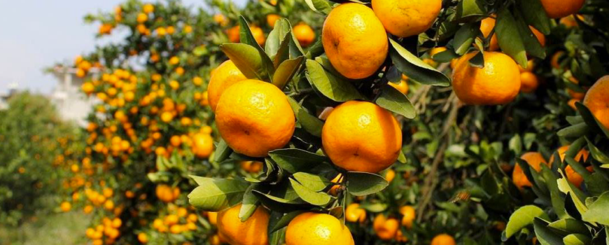
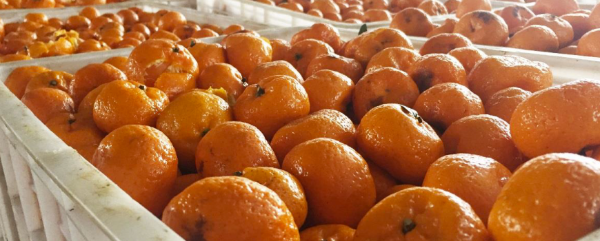
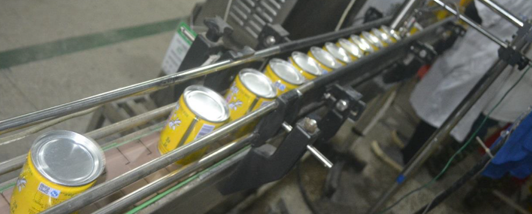
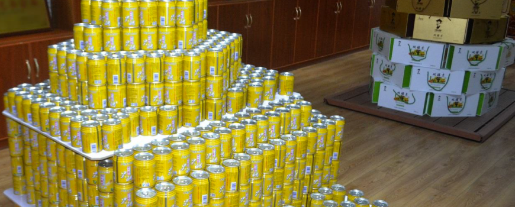
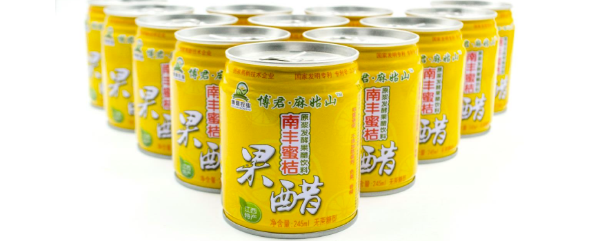

博君农业是一家大型的果蔬汁类饮料研发与生产企业，其中国实体运营子公 司是全国唯一的南丰蜜桔果醋生产商。博君农业于 2017 年 12 月 1 日在澳大利亚 证券交易所(ASX)正式挂牌。博君农业通过与固定的水果供应商、物流公司、 区域代理商建立长期的合作关系，严格控制原材料和产品的质量。博君农业在生 产各环节也有非常严格的流程化质量检测制度，以确保在各方面配合下能够生产出最优质的果醋饮料。博君农业坚持以高品质的标准，致力于成为天然果蔬汁饮 料行业的领军企业。 博君农业作为以水果农产品为主要原料的饮料生产商，对其产品的质量控制 有非常强烈的诉求，HealthTrace 刚好可以满足其增强质量把控的需求。
1.水果种植环节
博君农业与果品供应商建立长期合作关系，果品供应商的水果货源由当地的 水果种植农户提供。为保障水果质量的稳定，博君农业有权对农户的种植进行监 督和管理。 博君农业可要求农户将果树生长的详细过程、土壤环境检测等种植信息录入 到 HealthTrace 中。从水果生长根源开始进行跟踪，可以更好地进行产品溯源。

2.水果采购环节
公司与果品供应商签订收购协议，按照高品质果品的市场价格约定采购价格。 由于地处于原产地的优势，可以确保供应商按时足量的提供最佳质量的果品。 通过 HealthTrace 在此环节引入智能合约，用 HT 币向果品供应商支付货款同时检验水果品质情况，如果水果品质出现问题或该批次水果不符合公司生产加工条件，则可以自动退还款项，减免索赔纠纷。

3.运输环节
果品供应商向博君农业运输水果时采用自有运输方式，以便于质量把控和运输条件管理。博君农业的采购与运输合作方为同一商家，也便于责任划分。 在此环节，HealthTrace 会跟踪检测运输车辆的温度控制、运输路径及时间并 进行记录，在水果验收结束后双方可直接进行交易结算。由于在水果采购和运输 环节都有 HealthTrace 的记录，如果博君农业在验收时发现水果品质出现问题，也能明确果品不合格情况发生的具体环节责任人。
4.生产环节
博君农业验收原材料后将在自有工厂和外包工厂分别进行果醋饮料的生产 加工，直至成品装瓶(或罐)待售。 在此环节，HealthTrace 将跟踪原材料验收入库、农药检测、榨汁、发酵、调 配、陈酿、装罐等一系列生产流程的生产情况，将每一步骤的实际操作情况和负 责人信息都会被记录到 HealthTrace 上。同时博君农业也可以将生产过程中所涉 及到的专利项目使用记录到 HealthTrace 上。

5.销售环节
博君农业通过两家长期合作的物流公司向国内 10 个省份的区域代理商配送 果醋饮料产品。产品的实际销售由各代理商直接负责。 在此环节，HealthTrace 将实时记录物流公司配送产品时的运输路径和实时 运输条件，以及产品送达代理商时的质量情况。各区域代理商的销售信息和交接 凭证也同样会被记录在案，并通过智能合约与博君农业建立购销关系。在代理商 检验产品合格后，可直接通过智能合约以 HT 币向博君农业进行结算。

6.购买环节
消费者在购买果醋饮料时，扫描包装上的二维码，可以查看该产品从水果采购、运输、生产、配送、销售的全部相关信息和质检报告等内容，方便消费者明 确该产品的实际营养成分和配料，判断产品的真伪。同时能够对博君农业的相关信息进行一定程度的宣传，有利于提高其品牌效应，提高竞争力，增加市场份额。 如果发生产品质量问题，也可以及时发现产生问题的环节进行追责，倘若不是博君农业的责任，博君农业也可以通过 HealthTrace“自证清白”。
